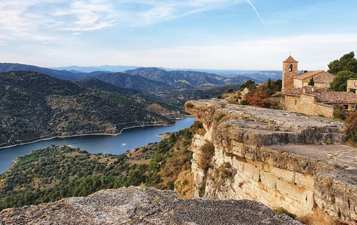

Los pueblos mas bonitos de cataluña
Los pueblos mas bonitos de cataluña

Además de ser considerado uno de los pueblos más bonitos de Cataluña, Siurana fue candidata a ser Patrimonio Mundial de la Unesco. Reposa sobre un acantilado que queda sobre el pantano del mismo nombre.
Desde Siurana podemos disfrutar de unas grandiosas vistas panorámicas de las Montañas de la Costa Dorada.
Cuenta la leyenda que la princesa mora Abdelazia se suicidó durante la reconquista de este pueblo tarraconense. Al ver peligrar la legitimidad y el poder de su califato, Abdelaiza montó a su caballo y se tiró por el acantilado.
Siurana es un pueblo amurallado, por lo cual no se puede circular por su interior. Un kilómetro antes de llegar al pueblo hay habilitada una zona de aparcamiento para conocerlo caminando.